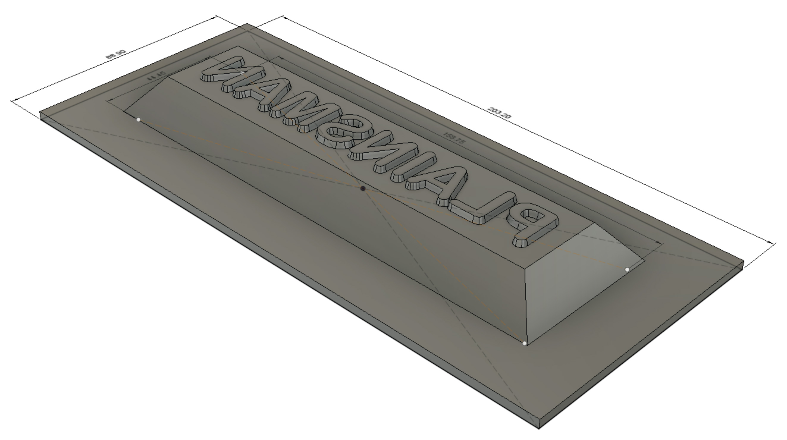
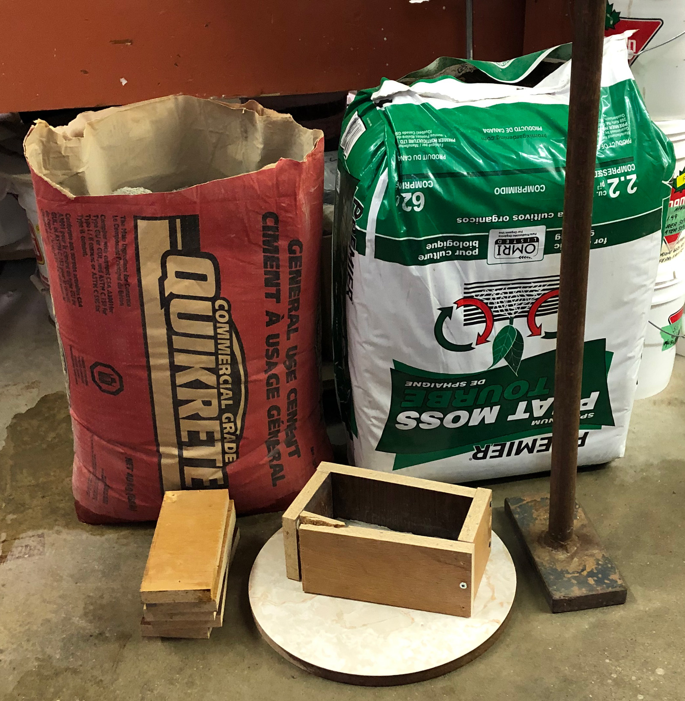
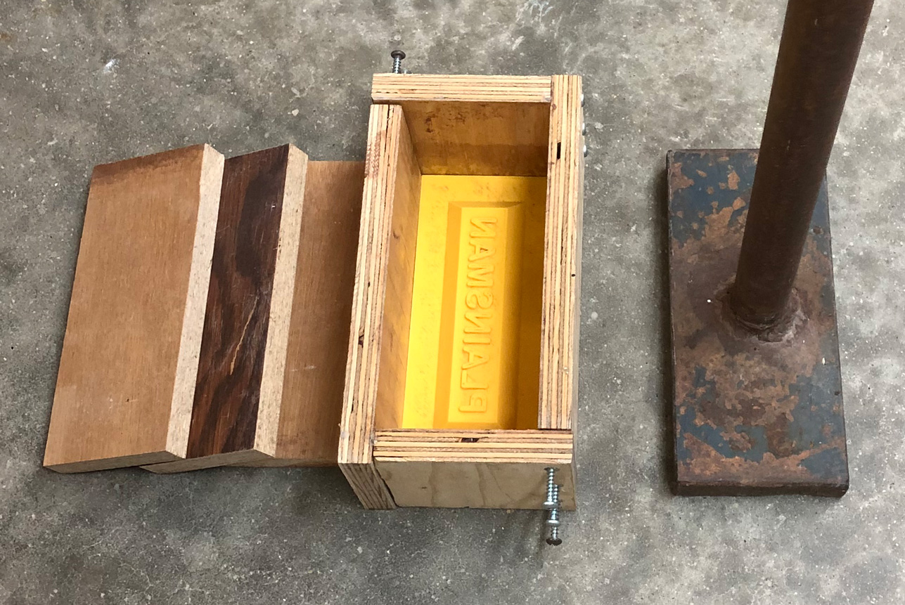
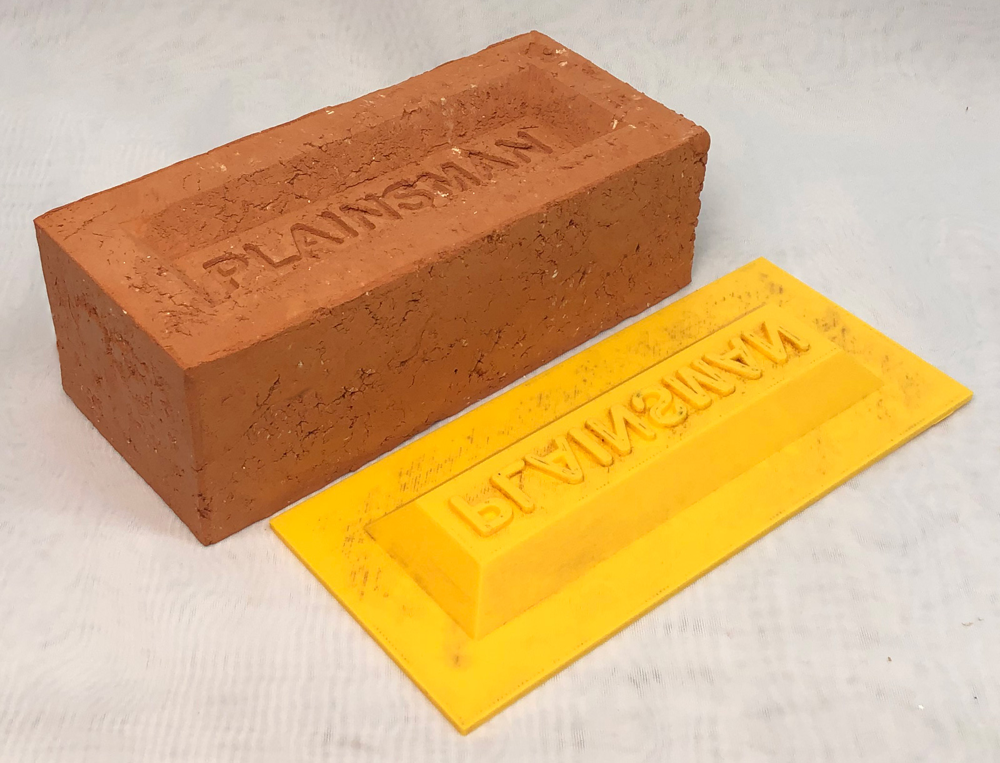
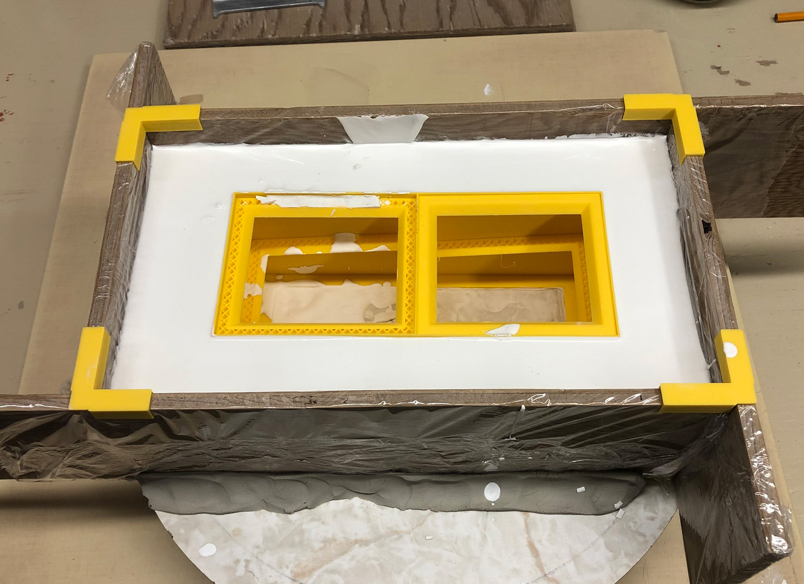

A cereal bowl jigger mold made using 3D printing
Beer Bottle Master Mold via 3D Printing
Better porosity for Brown Sugar Savers
Build a kiln monitoring device
Celebration Project
Coffee Mug Slip Casting Mold via 3D Printing
Comparing the Melt Fluidity of 16 Frits
Cookie Cutting clay with 3D printed cutters
Evaluating a clay's suitability for use in pottery
Make a mold for 4-gallon stackable calciners
Make Your Own Pyrometric Cones
Make your own sieve shaker to process ceramic slurries
Making a high quality ceramic tile
Making a Plaster Table
Making our own kiln posts using a hand extruder
Medalta Ball Pitcher Slip Casting Mold via 3D Printing
Medalta Jug Master Mold Development
Mold Natches
Mother Nature's Porcelain - Plainsman 3B
Mug Handle Casting
Nursery plant pot mold via 3D printing
Pie-Crust Mug-Making Method
Plainsman 3D, Mother Nature's Porcelain/Stoneware
Project to Document a Shimpo Jiggering Attachment
Roll, Cut, Pull, Attach Handle-making Method
Slurry Mixing and Dewatering Your Own Clay Body
Testing a New Load of EP Kaolin
Using milk as a glaze
Making Bricks
A project to use 3D printing to create molds for making bricks. I am inspired by bricks made across the Canadian prairies during the 19th and 20th centuries. I will experiment with making both compressed earth blocks and fired bricks. I am particularly excited about the possibility of making metallic bricks using Plainsman Fire-Red and St. Rose Red materials (firing them at cone 10R). And about using their Kaosand - it is only suitable as a minor ingredient in plastic bodies but has enough plasticity to hold together as a brick (and should dry quickly with minimal shrinkage).
Related Information
3D drawing of brick frog template

This picture has its own page with more detail, click here to see it.
The "frog" is the indentation in pressed bricks. I drew this design in Fusion 360. For initial testing I was able to oil the 3D printed form (having no infill), compress the clay directly against it and get good extraction. This is version 2, I maximized the amount of draft on the letters (it is a tricky process because of some of the tight angles). This is a very good example of the power that 3D printing puts into the hands of a small business. Thanks to Keeley Haftner for opening my eyes to this possibility.
Why a metal mold is needed for ramming clay into a mold

This picture has its own page with more detail, click here to see it.
I was using a heavy metal tamper to force high-water-content powder (about 12%) into a wooden form to make bricks. I use snug-fitted wooden spacers against the clay itself and deliver the blows to them. It became quickly evident, that even with 3/4 inch wood, my tamper can deliver greater pressure than the mold can withstand. I then switched to 3/4 inch plywood. With the same result! A metal mold seemed to be the next step but that was going to involve considerable expenditure. And were other problems: Removing the brick after pressing it in would be very difficult, metal molds are only practical if you have a machine with both pressing and extraction cycles. Another issue was getting a good logo impression on the frog: The clay is not hard enough to pull away from the mold without edges and pieces breaking off. In the end, for making sample bricks, a plastic mold and wetter clay are a better option.
3/4 inch plywood mold which also split

This picture has its own page with more detail, click here to see it.
The fact that it broke was not the only issue. A mold that I could disassemble seemed like a good idea but the pressure developed during ramming sticks the clay to the wood is such a way it is difficult to part them. This was another step is realizing, that for my goals of just making some demonstration bricks, it would be better to use a plaster mold and softer clay.
First try with my 3D printed frog

This picture has its own page with more detail, click here to see it.
The lettering on the frog does not have enough of a draft to release well. The oil soap I was using as a parting-agent did not work as well as canola oil. And the water content of the clay was too low to make it compress enough to get good surfaces.
Pouring a temporary plaster mold for pressing softer clay

This picture has its own page with more detail, click here to see it.
I 3D printed the yellow shell, it is the dimension into which the frog fits. Also 3D printed the clips to hold the boards in place.
Links
| URLs |
https://en.wikipedia.org/wiki/Compressed_earth_block
Compressed Earth Blocks |
 PayPal | No tracking, No ads, No paywall, No transient content! Just organized, concise information constantly updated and improved. Was this helpful? Consider supporting me. |
| By Tony Hansen Follow me on        |  |
Got a Question?
Buy me a coffee and we can talk 

https://digitalfire.com, All Rights Reserved
Privacy Policy